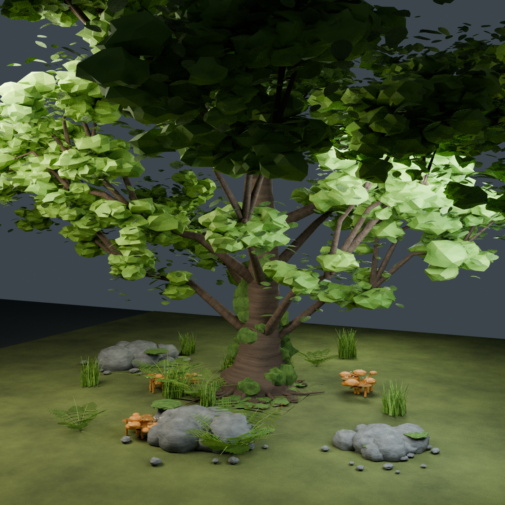

Method
How a scene is made
Work is generated from reusable Python builders rather than assembled from downloaded parts.
-
Geometry
Trees, roots, terrain, rocks and ground cover are emitted as meshes from deterministic generators, with real-world metre scale and clean topology.
-
Materials
Bark grain follows the tube axis through dedicated UVs. Leaf cards, moss and soil use procedural noise and colour ramps — no image textures.
-
Light & render
Cycles handles global illumination and atmosphere. The result keeps a deliberate faceted edge so the constructed geometry stays readable.

Technical notes
Blender 4.3.2 · Cycles CPU · 12 threads · no third-party models, image textures or HDRIs. Assets are based at z = 0, metrically scaled and exported as Y-up OBJ/MTL with UVs. Denoising is disabled because the build has no OpenImageDenoise.